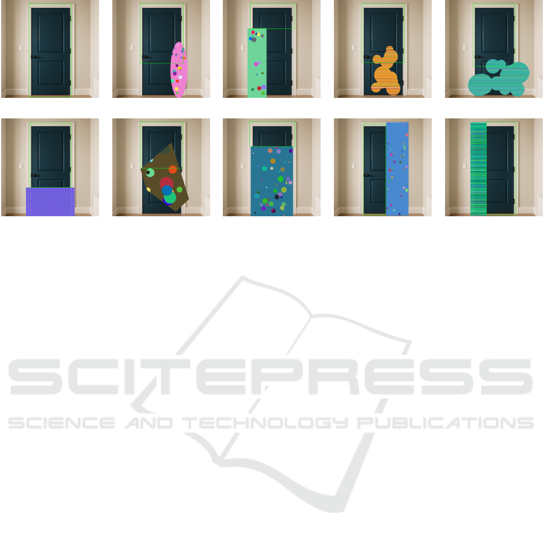
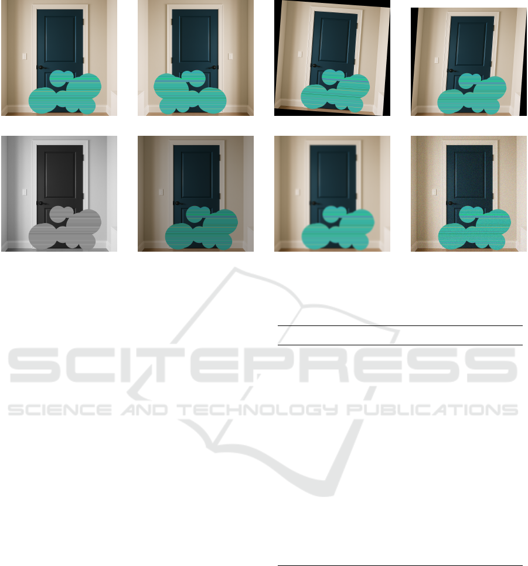
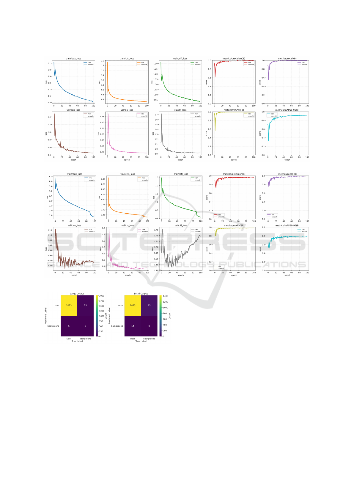
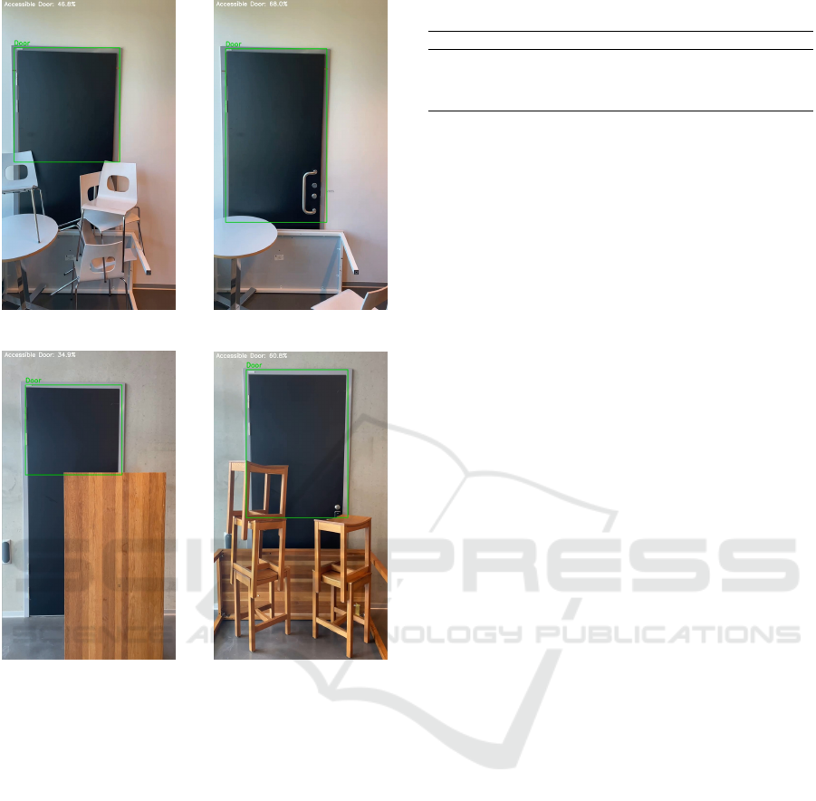

Real Time Exit Blockage Detection via Door-Centric Change Monitoring
for Emergency Evacuation
Hamed Talebi
1 a
, Nahid Khoshk Angabini
1
, Arezoo Sarkheyli-H
¨
agele
1,2 b
and Erdal Akin
1,2,3 c
1
Department of Computer Science and Media Technology, Malm
¨
o University, Malm
¨
o, Sweden
2
Sustainable Digitalization Research Center, Malm
¨
o University, Malm
¨
o, Sweden
3
Computer Engineering Department, Bitlis Eren University, Bitlis, Turkey
Keywords:
Computer Vision, Edge Computing, Object State Change Detection, YOLOv11, Evacuation Monitoring.
Abstract:
The availability of unobstructed exits is crucial for ensuring safe and efficient evacuation during emergen-
cies. However, real-time exit blockage detection, especially in buildings with multiple exits, poses a critical
challenge, and dynamic unforeseen obstructions can cause confusion, delays, and even injuries as evacuees
may be directed toward inaccessible routes. Human monitoring is often proven unreliable under such rapidly
changing conditions. In addition, existing vision-based approaches rely on exhaustive obstacle catalogs and
struggle to adapt to new and unforeseen blockage scenarios. In this work, we propose a novel, door-centric
change detection model that bypasses the need for object-specific obstacle recognition. Instead of identify-
ing all possible obstructions, our method focuses solely on monitoring the visual state of doors. Using a
lightweight YOLOv11s model, we track the bounding box geometry of each door and detect blockages based
on deviations from a known unobstructed reference. This approach simplifies the detection process while im-
proving adaptability to unknown obstruction types. We evaluate our model on diverse and previously unseen
video streams containing various types of door blockage. The results demonstrate high accuracy in estimating
accessible door areas and show strong generalization capabilities beyond the limitations of traditional object
detection methods. Notably, the model supports real-time inference on low-power edge devices, such as the
Raspberry Pi, enabling practical deployment in resource-constrained environments.
1 INTRODUCTION
Recent disasters and dynamic hazards in multi-floor,
multi-exit buildings pose significant challenges for
evacuation management. The architectural complex-
ity and extensive network of egress points in such
structures can overwhelm individual spatial aware-
ness, making it difficult to identify the least congested
and most accessible routes without comprehensive,
real-time information on exit availability (?). Tradi-
tional evacuation procedures rely on trained personnel
manually guiding occupants to safety; however, dur-
ing large-scale emergencies, such staff may be scarce
or overwhelmed. Moreover, rapidly evolving condi-
tions—such as earthquake debris, spreading fires, or
toxic gas leaks—can quickly render pre-planned es-
cape routes impassable, endangering both evacuees
a
https://orcid.org/0009-0003-0132-1885
b
https://orcid.org/0000-0001-6925-0444
c
https://orcid.org/0000-0002-2223-3927
and first responders (?).
Sensor-based monitoring systems have offered
partial mitigation by continuously collecting environ-
mental data and reporting anomalies to a central com-
mand unit (?). However, many such “black-box”
sensors lack the spatial context necessary to localize
or classify unforeseen hazards—such as a collapsed
beam obstructing a corridor or smoke rapidly accu-
mulating near an exit—without explicit reports from
personnel on the ground (?). Recent advances in ma-
chine learning (ML), and particularly in deep convo-
lutional neural networks, have enabled robust com-
puter vision solutions capable of scene understanding
in indoor and urban environments (?). These sys-
tems can detect and localize critical objects or con-
ditions in real time, delivering actionable insights di-
rectly to evacuation management platforms (?). Yet,
existing vision-based approaches typically rely on ex-
haustive catalogs of obstacle classes and struggle to
adapt when novel or unexpected blockages arise (?).
To address these limitations, we propose a novel
2648
Talebi, H., Angabini, N. K., Sarkheyli-Hägele, A. and Akin, E.
Real Time Exit Blockage Detection via Door-Centric Change Monitoring for Emergency Evacuation.
DOI: 10.5220/0014312900004052
Paper published under CC license (CC BY-NC-ND 4.0)
In Proceedings of the 18th International Conference on Agents and Artificial Intelligence (ICAART 2026) - Volume 3, pages 2648-2657
ISBN: 978-989-758-796-2; ISSN: 2184-433X
Proceedings Copyright © 2026 by SCITEPRESS – Science and Technology Publications, Lda.

door-centric change-detection model that monitors
only the visual state of exits. By training a lightweight
YOLOv11 network to track each door’s bounding-
box geometry and comparing it against a stored unob-
structed reference, our model signals potential block-
ages whenever significant deviations occur. This
strategy eliminates the need for object-specific ob-
stacle recognition, simplifying the detection pipeline
while enhancing adaptability to unknown obstruction
types.
Our approach treats the doorway as the primary
object of analysis instead of classifying individual
obstacles. The model infers exit blockage through
variations in the door’s bounding-box geometry and
IoU consistency over time. By combining distributed
supervision with IoU-weighted objectives, the ap-
proach achieves high sensitivity to partial occlusions
while maintaining real-time performance on low-
power edge devices (e.g., Raspberry Pi). We evalu-
ate the method on diverse, previously unseen video
streams featuring multiple door-blockage scenarios
and observe strong generalization beyond traditional
object detectors, with accurate estimation of accessi-
ble door areas and practical deployability in resource-
constrained environments.
The remainder of this paper is organized as fol-
lows. Section ?? reviews prior work in evacuation
support and computer vision for obstruction detec-
tion. Section ?? details our door-state change model,
data preparation, and training procedures. Section ??
presents quantitative and qualitative evaluations un-
der diverse conditions. Finally, Section ?? concludes
with a summary of findings and potential directions
for future research..
2 RELATED WORK
Automated evacuation monitoring has drawn on both
sensor-based and vision-based technologies. Sensor
arrays (e.g., environmental detectors for smoke, gas,
or structural strain) offer continuous anomaly report-
ing but lack the spatial resolution required to pin-
point obstructions without human intervention (?). In
contrast, recent advances in deep convolutional net-
works have enabled real-time scene understanding in
complex indoor and urban contexts, facilitating ob-
ject localization under challenging lighting and oc-
clusion conditions (?; ?). Lightweight detectors, such
as YOLOv11 variants, have been shown to achieve a
favorable balance of speed and accuracy on resource-
constrained hardware (?).
General object detection research has addressed
limited-label regimes through semi- and weakly su-
pervised approaches. Semi-supervised methods lever-
age large pools of unlabeled images to boost accuracy
with few annotations (?), while weakly supervised
frameworks integrate contextual cues via interactive
learning to compensate for coarse image-level labels
(?). Although these techniques improve robustness in
noisy or sparsely annotated domains, they still depend
on explicit class definitions and struggle when novel
obstacle types appear.
Open-world change detection extends beyond
fixed-category recognition by focusing on state transi-
tions. (?) investigate video-based object state changes
without exhaustive object catalogs, demonstrating im-
proved adaptability to unforeseen scenarios. This
perspective aligns with our door-state monitoring
paradigm, which infers obstructions through devia-
tions in bounding-box geometry rather than through
direct obstacle classification.
Despite progress in multi-modal fusion (e.g.,
radar–camera (?), LiDAR–image (?)) and
compressed-domain detection (?), few studies
target the specific problem of exit blockage in evac-
uation contexts. To our knowledge, no prior work
has proposed a door-centric change-detection model
that eschews object-specific recognition in favor of
monitoring bounding-box alterations.
Recent studies have shown that robust object state
monitoring relies not only on the detection backbone
but also on the optimization strategy that governs
how classification confidence and localization quality
are coupled. Generalized Focal Loss (GFL) unifies
these two aspects by integrating class confidence and
IoU quality into a single objective, replacing discrete
bounding-box targets with continuous probability dis-
tributions optimized via Quality and Distribution Fo-
cal Loss (?). This approach of learning distributed
rather than point targets has proven effective across
various tracking and detection domains. For instance,
Gaussian Distributed Focal Loss has stabilized local-
ization quality estimation in STARK-style trackers by
introducing a Gaussian-shaped supervision over con-
tinuous bounding-box quality scores (?).
Building on this foundation, several studies have
proposed adaptive loss formulations. Automated Fo-
cal Loss dynamically adjusts the focusing parameter
γ according to the batchwise prediction quality, re-
ducing manual tuning and accelerating convergence
(?), while dynamic loss mechanisms further empha-
size complex samples to improve convergence in one-
stage detectors (?). On the regression side, IoU-based
loss families have evolved to address limitations of
overlap-dependent gradients. Focal-EIoU combines
efficient IoU decomposition with focal weighting to
prioritize high-quality anchors (?), and Focal IoU loss
Real Time Exit Blockage Detection via Door-Centric Change Monitoring for Emergency Evacuation
2649

introduces adaptive weighting to better learn diffi-
cult bounding boxes (?). Geometric refinements such
as Control Distance IoU (CDIoU) (?) and Central-
Gaussian Angle-IoU (CA-IoU) (?) improve conver-
gence speed and alignment precision by incorporat-
ing spatial distance and angular penalties, while hy-
brid approaches like GCIoU integrate complementary
terms to enhance both accuracy and stability during
training (?).
Together, these developments highlight two core
principles underlying this research: (i) decoupling
recognition from state monitoring through geometry-
and quality-oriented supervision (?; ?), and (ii) lever-
aging IoU-aware regression losses that remain infor-
mative under occlusion, partial overlap, or irregular
obstruction shapes (?; ?; ?; ?).
3 METHOD
In this work, we propose an innovative solution that
evaluates door-state changes to detect potential block-
ages. Traditional object detection methods localize
and classify each object in an image or video stream
by returning its bounding-box coordinates. When two
bounding boxes overlap, this may indicate collision or
occlusion between the corresponding objects. How-
ever, to identify every conceivable obstruction, espe-
cially in emergency scenarios where any physical ob-
ject might block an exit, the model would need to be
trained on an impractically large variety of items.
To overcome this limitation, we focus exclusively
on a single object class, namely the “door,” which
serves as a proxy for exit viability. Rather than de-
tecting all possible occluding objects, our approach
monitors changes in the door’s bounding box coor-
dinates and dimensions. By comparing the inferred
bounding box of the door in a current frame against a
stored reference (healthy) state, the system can infer
the presence of an obstruction whenever significant
deviations occur.
3.1 Dataset Collection
Our method requires a diverse set of door images,
encompassing both exterior and interior contexts. A
review of existing benchmarks, such as COCO, re-
vealed the absence of a standardized door dataset. Al-
though Google Open Images V7 (?) contains door an-
notations, the labels are not domain-specific: they in-
clude automobile doors, telephone-kiosk doors, gates,
and more. From the 5,916 images labeled as “door”
in Open Image (?), we manually selected 457 unique
photographs depicting building entrance doors. To
enrich interior variability, we supplemented this with
181 additional images of indoor doors sourced via in-
ternet search. In total, our curated dataset comprises
648 unique door images.
3.2 Synthetic Blockage Generation
To simulate a wide range of obstructions, we gener-
ated nine blocked variants for each original (healthy)
door image, yielding a corpus of 6,480 frames. Using
the PIL (Pillow) library’s Image and ImageDraw mod-
ules, we programmatically overlaid shapes of varying
sizes, patterns, and colors to mimic plausible block-
age scenarios. Figure ?? provides an overview of
these manipulations: ?? shows an unobstructed door;
?? and ?? illustrate blockages in the bottom right
and bottom left quadrants, respectively; ?? depicts
a central obstruction at the door base; Figures ??
through ?? simulate horizontal occlusions affecting
both side frames at varying heights; and ?? and ??
represent vertical blockages extending across full side
frames with partial coverage of the top and bottom
edges.
3.3 Annotation Protocol
Each synthesized image was annotated following a
consistent protocol. For unobstructed doors, the
bounding box encompasses the entire door frame.
When blockage occurs on opposite sides, either hor-
izontally (left and right) or vertically (top and bot-
tom), the annotation is restricted to the visible por-
tion of the door up to the occluded frame. In cases of
unilateral obstruction, the bounding box is either ex-
panded beyond the visible frame (when the occluding
shape is small, as in Figure ??) or confined to the un-
obstructed segment of the door (when the occluding
shape is large, as in Figure ??). Annotated bounding
boxes are depicted in green in Figure ??.
During the annotation process, we deliberately ig-
nored any visual elements situated centrally on the
door surface, such as decorative panels, graffiti, or
wreaths. We operated under the principle that gen-
uine obstructions must intersect the door’s structural
boundaries, specifically, the left or right stiles, the
top rail, or the door sill, thereby indicating contact
with the frame or the floor. By excluding centrally
located patterns from our annotations, we prevent
the model from misattributing non-obstructive deco-
rations as blockages. Moreover, this annotation strat-
egy emphasizes the primacy of the door frame regions
in the learning objective, guiding the model to as-
sign greater significance to alterations along the frame
edges rather than to variations in the door’s central
ICAART 2026 - 18th International Conference on Agents and Artificial Intelligence
2650

(a) (b) (c) (d) (e)
(f) (g) (h) (i) (j)
Figure 1: Illustrative door conditions: (a) unobstructed baseline; (b)–(d) obstructed on the right, left, and center; (e)–(h)
varying degrees of horizontal obstruction; (i)–(j) vertical obstruction.
panel.
3.4 Corpus Augmentation
To enhance model robustness against variability in
lighting, perspective, and image quality, we applied
a suite of augmentation techniques to our synthesized
door dataset. Although the original door images were
collected under diverse illumination regimes, rang-
ing from natural daylight to nocturnal artificial light-
ing, and captured from multiple viewing angles, real-
world deployments may encounter additional noise
factors. Consequently, we introduced systematic
transformations designed to emulate common distor-
tions and environmental conditions. Figure ?? pro-
vides a visual summary of these augmentations. In
particular, Figure ?? shows the baseline synthesized
door without modification; Figure ?? demonstrates a
horizontal mirror flip to simulate mirrored camera in-
stallations; Figures ?? and ?? depict rotations of ±4
◦
and affine shearing, respectively, which model slight
camera misalignments; Figure ?? converts the im-
age to grayscale to test performance under monochro-
matic capture; and Figure ?? applies a randomized
brightness reduction of up to 15%, reflecting overcast
or poorly lit conditions. Finally, Figures ?? and ??
illustrate Gaussian blurring and additive pixel-level
noise, respectively, to simulate motion blur and sensor
artifacts encountered in low-visibility or high-speed
scenarios.
These augmentation procedures were applied at
random to each of the 6,480 synthesized images, com-
prising both the original “healthy” door frames and
their nine blocked variants, to produce two expanded
corpora of differing scale. The first augmented set
contains 16,871 images, while the second comprises
21,915 images. By training and evaluating our model
on these two datasets, we aim to assess the impact
of augmentation volume on detection accuracy and
generalization. Specifically, we investigate whether
a larger, more heterogeneous training corpus yields
statistically significant improvements in the model’s
ability to detect door-state anomalies under previ-
ously unseen conditions.
3.5 Model Training
To detect the “door” class in both static images and
live video frames, we adopted the YOLOv11s archi-
tecture, a one-stage detector optimized for deploy-
ment on resource-constrained edge devices. YOLO
networks are renowned for their real-time perfor-
mance, and recent studies have demonstrated their
suitability in challenging environments. For exam-
ple, (?) evaluated YOLO’s throughput and accuracy
on embedded hardware, concluding that its single-
stage pipeline effectively balances speed and preci-
sion under tight computational budgets. Similarly,
(?) applied YOLO to underwater imagery, an ana-
log to emergency conditions characterized by low
contrast and cluttered backgrounds, and reported ro-
bust detection of small, partially occluded objects.
More recently, (?) benchmarked the YOLO11s vari-
ant on mobile platforms, highlighting its adaptabil-
ity and low-latency inference even when processing
complex scenes. Based on these findings, we selected
YOLOv11s for its combination of compact model
size, rapid inference, and proven resilience in noisy
visual contexts.
We conducted four distinct training models to
Real Time Exit Blockage Detection via Door-Centric Change Monitoring for Emergency Evacuation
2651

(a) (b) (c) (d)
(e) (f) (g) (h)
Figure 2: Variations of a door image used for robustness analysis: (a) original door image, (b) flipped horizontally, (c) rotation
distortion, (d) skewed image, (e) grayscale transformation, (f) brightness change, (g) blurriness, and (h) noise corruption.
evaluate how corpus size and stopping criteria affect
model sensitivity to door-state changes. The summary
configuration of these four models’ training is pre-
sented in Table ??. In the first model (A), we trained
YOLOv11s on the larger augmented corpus (21,915
images) for up to 100 epochs, employing early stop-
ping with a patience parameter of ten epochs. Early
stopping halts training if validation precision and loss
fail to improve over ten successive epochs, thereby
mitigating overfitting and enhancing generalization
(?; ?). The best validation weights were obtained
at epoch 31, after which training ceased. While this
model achieved high confidence in detecting unob-
structed doors, its performance degraded on instances
with partial frame occlusions, indicating insufficient
representation of subtle state changes.
To address this shortfall, we retrained on the same
larger corpus for 200 epochs without early stopping
(model B), saving model checkpoints at 50-epoch in-
tervals. This procedure yielded five candidate models
(at epochs 50, 100, 150, 200), plus an intermediate
best performer at epoch 73, selected for its optimal
trade-off between localization loss and detection ac-
curacy. Notably, the checkpointed models at epochs
50, 73, and 100 demonstrated markedly improved re-
call of doors with unilateral frame blockages, as well
as increased confidence scores on these challenging
examples.
Next, we investigated the impact of corpus scale
by training on the smaller augmented set (16,871 im-
ages). We ran a 100-epoch session without early
stopping (model C), recording the best weights at
Table 1: Summary of Model Training Configurations.
Model Training Configuration
A Trained on the larger augmented corpus for
100 epochs, with early stopping applied
(patience of ten epochs).
B Trained on the larger augmented corpus for
200 epochs without early stopping; check-
points saved at epochs 50, 100, 150, and
200, with the best-performing checkpoint
selected.
C Trained on the smaller augmented corpus
for 100 epochs without early stopping, us-
ing validation metrics to identify the opti-
mal epoch.
D Trained on a randomly augmented version
of the smaller corpus (same size) for 100
epochs to confirm the reproducibility of
performance trends observed in Model C.
epoch 75, strikingly close to the optimal epoch from
the larger corpus. This smaller-corpus model outper-
formed the second large-corpus model (model B) in
terms of bounding-box sensitivity to partial obstruc-
tions, despite exhibiting a higher Distributed Focal
Loss (DFL). As formulated by (?), DFL encourages
the network to concentrate its probability mass around
the continuous ground-truth target location, yielding
tighter and more precise box predictions. (?) further
demonstrated that elevated focal-loss weighting can
enhance localization accuracy by driving the model
to emphasize boundary-proximal regions.
ICAART 2026 - 18th International Conference on Agents and Artificial Intelligence
2652

Under traditional interpretation, an increasing or
stable DFL across training epochs may signal over-
fitting, as the network “memorizes” training samples
rather than generalizing (?). However, our objective
diverges from pure object detection: we aim to maxi-
mize sensitivity to door-state deviations. The smaller
corpus, with its reduced redundancy of augmented
instances, appears to accentuate the model’s respon-
siveness to bounding-box perturbations, even as DFL
rises. To validate this hypothesis, we generated a new
random augmentation of equivalent size to the smaller
dataset and performed a fourth training run for 100
epochs (model D). The best weights again emerged
at epoch 77, mirroring previous optimal checkpoints.
Consistently, the model exhibited high DFL values
accompanied by superior performance in detecting
door-frame alterations.
Having established the training regimen and iden-
tified the configurations that best capture door-state
changes, we now turn to Section ?? to present the
quantitative and qualitative evaluation of our models
under diverse test scenarios.
4 RESULTS
Model A, which employed early stopping, termi-
nated training at epoch 31. Although this model reli-
ably detected and localized fully unobstructed doors,
it proved ineffective at identifying partially or fully
blocked exits. Model D was constructed to verify
the reproducibility of Model C’s performance: we ap-
plied a randomized augmentation pipeline of identi-
cal size and an alternative train–validation split, yield-
ing results consistent with those of Model C. Conse-
quently, we focus our subsequent analysis on Model
B (trained on the larger corpus as seen in Fig. ??)
and Model C (trained on the smaller corpus as seen
in Fig ??).
We first examine the training dynamics, loss be-
havior, and class-level performance of our models
trained on the large (Model B) and small (Model C)
augmented corpora (Figure ?? and Figure ??). We
then transition to an evaluation on entirely unseen
video sequences to assess real-time blockage detec-
tion capabilities.
4.1 Large-Corpus Model Performance
Figures ?? summarize the training and validation
curves for our YOLOv11s models trained on the
large (21,915 images) corpus. It presents the evolu-
tion of box-loss, classification-loss, Distributed Fo-
cal Loss (DFL), and the primary detection metrics:
precision, recall, mAP50, and mAP50–95. The fig-
ure shows both training and validation boxes, and
classification losses decline smoothly, indicating ef-
fective learning of door localization and classifica-
tion. The DFL decreases steadily from approximately
1.3 to 0.9, reflecting increasingly compact predicted
bounding-box distributions around ground-truth tar-
gets. Precision and recall both converge near 0.995,
while mAP50 exceeds 0.99 and mAP50–95 plateaus
around 0.92 by epoch 60.
The confusion matrix in Figure ?? (left) further
confirms these findings: out of 2,048 true “door” in-
stances, the model correctly predicts 2,023 (99.8%
true positives), with only 5 missed detections (false
negatives). There are 25 false positives (background
predicted as door) and no true background examples
in the validation set, underscoring the model’s strong
discrimination when ample training data are available.
4.2 Small-Corpus Model Performance
and DFL Behavior
Similarly, for the small corpus (Figure ??), the train-
ing DFL again decreases monotonically, but the val-
idation DFL follows a U-shaped curve: it falls from
around 1.29 to a minimum of 1.10 by epoch 30, then
rises back to 1.40 by epoch 100. Traditional inter-
pretation would view this resurgence as overfitting,
coinciding with a lower mAP50–95 (peaking near
0.78 versus 0.92 for the large corpus), despite a high
mAP50 of 0.98.
The corresponding confusion matrix (Figure ??,
right) shows 1,425 true positives out of 1,439 “door”
instances (99.0% recall), with 14 false negatives and
73 false positives. The elevated false-positive rate re-
flects the smaller training set’s reduced exposure to
background variability.
Crucially, the increase in validation DFL for the
small-corpus model aligns with improved sensitiv-
ity to partial obstructions. As DFL rises, the net-
work concentrates its probability mass more narrowly
around the visible edges of the ground-truth box.
This tighter localization enables the model to gen-
erate bounding boxes that exclude occluded regions,
thereby accurately delineating the unobstructed por-
tion of the door, exactly the behavior required for re-
liable blockage alerts. Thus, while the small-corpus
model exhibits traditional signs of overfitting in its
DFL curve, it paradoxically better fulfills our primary
objective of detecting door-state changes.
Real Time Exit Blockage Detection via Door-Centric Change Monitoring for Emergency Evacuation
2653

Figure 3: Model Training & Validation Results on Large Corpus.
Figure 4: Model Training & Validation Results on Small Corpus.
Figure 5: Confusion Matrix for Large and Small Corpora
Models.
4.3 Model Evaluation on Unseen Data
To assess real-time blockage detection under realis-
tic conditions, we recorded two videos on the Malm
¨
o
University campus in which doors were successively
obstructed by chairs, tables, and benches. None of
these frames appeared in our training or validation
sets. We performed two complementary tests: a
“static” evaluation on a manually annotated image
subset, and a “dynamic” evaluation directly on the
video streams.
4.3.1 Static Test on Raspberry Pi 5
From the two videos, we extracted and hand-
annotated approximately 300 frames to create
a ground-truth test dataset. We deployed the
YOLOv11-small model trained on the small cor-
pus, chosen for its superior change-sensitivity, onto
a Raspberry Pi 5. Since the default PyTorch runtime
is not optimized for ARM architectures, we converted
the model into four additional formats:
• ONNX: an open interchange format that enables
interoperability between frameworks;
• OpenVINO: Intel’s toolkit for optimizing and
accelerating inference on CPU and integrated
GPUs;
• MNN: Alibaba’s lightweight inference engine de-
signed for mobile and edge devices;
ICAART 2026 - 18th International Conference on Agents and Artificial Intelligence
2654

(a) (b)
(c) (d)
Figure 6: Example outputs of the model on two unseen
video streams.
• NCNN: Tencent’s high-performance neural net-
work inference framework for ARM processors.
Table ?? compares each format in terms of model
size, detection accuracy measured by mAP50–95,
average inference time per image, and resulting
frames per second (FPS). All formats maintain
comparable localization performance (0.8365–0.8433
mAP50–95), indicating that format conversion does
not degrade accuracy. However, inference speed
varies markedly: the PyTorch model processes at only
0.75 FPS (1326 ms/frame), whereas ONNX achieves
2.24 FPS, MNN 3.72 FPS, NCNN 4.84 FPS, and
OpenVINO leads with 5.78 FPS (172.9 ms/frame).
These results illustrate that OpenVINO and NCNN
offer the best trade-off between throughput and pre-
cision for on-edge door-state monitoring.
Table 2: Model Format Performance Comparison.
Format Size (MB) metrics/mAP50-95(B) Inference time (ms/im) FPS
PyTorch (default) 18.3 0.8416 1326.29 0.75
ONNX 36.2 0.8419 447.12 2.24
OpenVINO 36.3 0.8365 172.93 5.78
MNN 36.1 0.8428 268.64 3.72
NCNN 36.1 0.8433 206.80 4.84
4.3.2 Dynamic Video-Stream Test
For live evaluation, we first computed a reference
bounding box by running the model on an unob-
structed frame. As each obstruction was introduced,
we measured the ratio of the predicted visible-door
area to this reference area, yielding a per-frame “ac-
cessible door” percentage. Figure ?? presents four
representative frames:
(a) Stacked chairs reduce the accessible area to
46.8%;
(b) A partially blocking table yields 68.0% visible
door;
(c) A table obstruction leaves only 34.9% exposed;
(d) Multiple benches produce a 60.8% clearance.
In all cases, the green bounding box accurately
conforms to the unobstructed region, demonstrating
the model’s ability to generalize to novel obstruction
types and to quantify exit viability in real time.
Together, these evaluations confirm that our
change-detection model not only generalizes to previ-
ously unseen environments but also operates with suf-
ficient speed and accuracy on edge hardware to sup-
port live evacuation monitoring.
5 CONCLUSION AND FUTURE
WORK
In this paper, we have presented a novel computer-
vision framework for detecting exit blockages by
monitoring door–state changes rather than attempt-
ing exhaustive object cataloging. Leveraging a cu-
rated dataset of 648 unique door images and nine
synthetically generated obstruction variants per im-
age, we trained a lightweight YOLOv11s model on
both large and small augmented corpora. Our analy-
sis of training dynamics—particularly the behavior of
the Distributed Focal Loss—revealed a trade-off be-
tween generalization and sensitivity to partial occlu-
sions: models trained on smaller datasets exhibited
tighter bounding-box localization around visible door
regions, while larger-corpus models achieved superior
overall mAP50–95 scores.
We further demonstrated real-time applicability
on a Raspberry Pi 5 by benchmarking multiple infer-
ence formats (PyTorch, ONNX, OpenVINO, MNN,
Real Time Exit Blockage Detection via Door-Centric Change Monitoring for Emergency Evacuation
2655

NCNN) and achieving up to 5.78 FPS with minimal
loss in detection accuracy. Finally, evaluations on two
previously unseen video streams confirmed that our
system accurately quantifies the visible door area un-
der a variety of novel obstruction scenarios, yielding
reliable “accessible door” measurements.
While these results substantiate the viability of
change-detection for evacuation monitoring, future
work should explore larger pools of unique door im-
ages—spanning diverse architectural styles, materi-
als, and lighting conditions—and more varied ob-
struction scenarios (e.g., debris of irregular shapes,
dynamic crowding). Such expanded testing will be
essential to validate the robustness and generalizabil-
ity of our approach across the full spectrum of real-
world emergency environments.
ACKNOWLEDGEMENTS
This work forms part of the EvacAware research
project at Malm
¨
o University, and we are grateful for
the opportunity to contribute to its objectives.
REFERENCES
Allo, N. T., Zainuddin, Z., et al. (2024). A novel approach
of hybrid bounding box regression mechanism to im-
prove convergency rate and accuracy. International
Journal of Intelligent Engineering & Systems, 17(2).
Chang, Y., Wan, S., Gao, Y., Bu, Z., Li, P., and Ding,
L. (2025). Feature-enhanced pointpillars for 3-d
millimeter-wave object detection. IEEE Transactions
on Aerospace and Electronic Systems, 61(2):3828–
3839.
Dong, C. and Duoqian, M. (2023). Control distance iou
and control distance iou loss for better bounding box
regression. Pattern Recognition, 137:109256.
Google Team (2025). Open images dataset v7 and ex-
tensions. https://storage.googleapis.com/openimages/
web/index.html. Accessed: 15 May 2025.
Huang, X., Gong, Y., Wu, W., Zhu, S., and Zhao, Y. (2025).
Csdet: A compressed sensing object detection archi-
tecture with lightweight networks. IEEE Transac-
tions on Circuits and Systems for Video Technology,
35(3):2355–2368.
Jang, J., Kim, D., and Paik, J. (2025). Ca-iou: Central-
gaussian angle-iou for robust bounding box regres-
sion. In 2025 IEEE International Conference on
Robotics and Automation (ICRA), pages 3984–3990.
IEEE.
Kim, S., Kim, C., and Kim, S. (2024). Improving per-
formance of real-time object detection in edge device
through concurrent multi-frame processing. IEEE Ac-
cess.
Lai, Q., Vong, C.-M., Shi, S.-Q., and Chen, C. P. (2025). To-
wards precise weakly supervised object detection via
interactive contrastive learning of context information.
IEEE Transactions on Emerging Topics in Computa-
tional Intelligence, 9(2):1795–1804.
Li, X., Wang, W., Wu, L., Chen, S., Hu, X., Li, J., Tang,
J., and Yang, J. (2020). Generalized focal loss: Learn-
ing qualified and distributed bounding boxes for dense
object detection. Advances in neural information pro-
cessing systems, 33:21002–21012.
Liao, Y. and Cao, P. (2024). Focal iou loss: More attentive
learning for bounding box regression. In Proceedings
of the 2024 4th International Conference on Internet
of Things and Machine Learning, pages 54–59.
Liu, F., Fei, Y., Su, M., Zang, R., Sun, X., and Wang,
G. (2024). A novel lightweight model for underwa-
ter small object detection. In 2024 China Automation
Congress (CAC), pages 2226–2231. IEEE.
Miseta, T., Fodor, A., and Vathy-Fogarassy,
´
A. (2024).
Surpassing early stopping: A novel correlation-based
stopping criterion for neural networks. Neurocomput-
ing, 567:127028.
Sajja, B. and Kim, S. H. (2024). Impact of noise in large
real-world datasets on semi-supervised object detec-
tion: A case study of homeless encampments detec-
tion. In 2024 IEEE International Conference on Big
Data (BigData), pages 1434–1441.
Sharma, S., Stigall, J., and Bodempudi, S. T. (2020). Sit-
uational awareness-based augmented reality instruc-
tional (ari) module for building evacuation. In 2020
IEEE Conference on Virtual Reality and 3D User In-
terfaces Abstracts and Workshops (VRW), pages 70–
78. IEEE.
Wang, Z., Su, Y., Kang, F., Wang, L., Lin, Y., Wu, Q., Li,
H., and Cai, Z. (2025). Pc-yolo11s: a lightweight
and effective feature extraction method for small tar-
get image detection. Sensors, 25(2):348.
Weber, M., F
¨
urst, M., and Z
¨
ollner, J. M. (2020). Auto-
mated focal loss for image based object detection. In
2020 IEEE Intelligent Vehicles Symposium (IV), pages
1423–1429. IEEE.
Xiong, W., Zou, Z., Zhao, Q., He, F., and Zhu, B. (2025).
Lxlv2: Enhanced lidar excluded lean 3d object de-
tection with fusion of 4d radar and camera. IEEE
Robotics and Automation Letters, 10(3):2862–2869.
Xue, Z., Ashutosh, K., and Grauman, K. (2024). Learning
object state changes in videos: An open-world per-
spective. In Proceedings of the IEEE/CVF Conference
on Computer Vision and Pattern Recognition, pages
18493–18503.
Zhang, Y., Ren, W., Zhang, Z., Jia, Z., Wang, L., and Tan,
T. (2019). Focal and efficient iou loss for accurate
bounding box regression. arxiv 2021. arXiv preprint
arXiv:2101.08158.
Zhao, K., Zhu, X., Jiang, H., Zhang, C., Wang, Z., and Fu,
B. (2018). Dynamic loss for one-stage object detectors
in computer vision. Electronics Letters, 54(25):1433–
1434.
Zhong, Z., Yan, J., Wu, W., Shao, J., and Liu, C.-L. (2018).
Practical block-wise neural network architecture gen-
ICAART 2026 - 18th International Conference on Agents and Artificial Intelligence
2656
eration. In Proceedings of the IEEE conference on
computer vision and pattern recognition, pages 2423–
2432.
Zhou, X., Wang, C., Xie, Q., and Qiu, T. (2025). V2i-
coop: Accurate object detection for connected auto-
mated vehicles at accident black spots with v2i cross-
modality cooperation. IEEE Transactions on Mobile
Computing, 24(3):2043–2055.
Zhu, J., Tang, H., and Chai, L. (2024). An improved
stark tracker with gaussian distributed focal loss. In
2024 36th Chinese Control and Decision Conference
(CCDC), pages 1981–1986. IEEE.
Real Time Exit Blockage Detection via Door-Centric Change Monitoring for Emergency Evacuation
2657